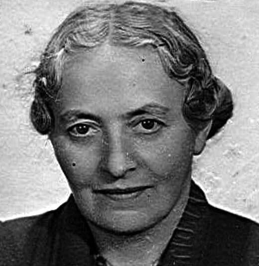
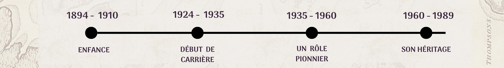
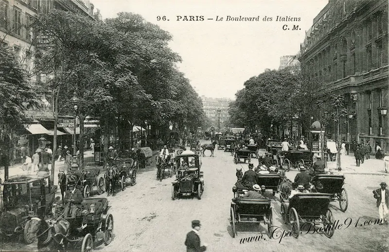
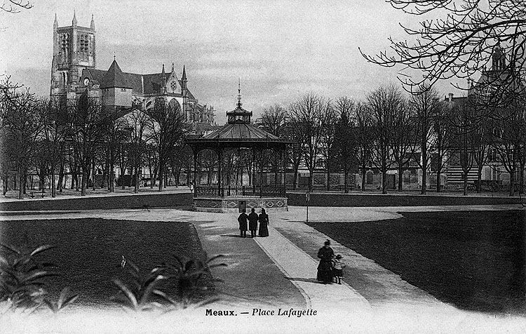
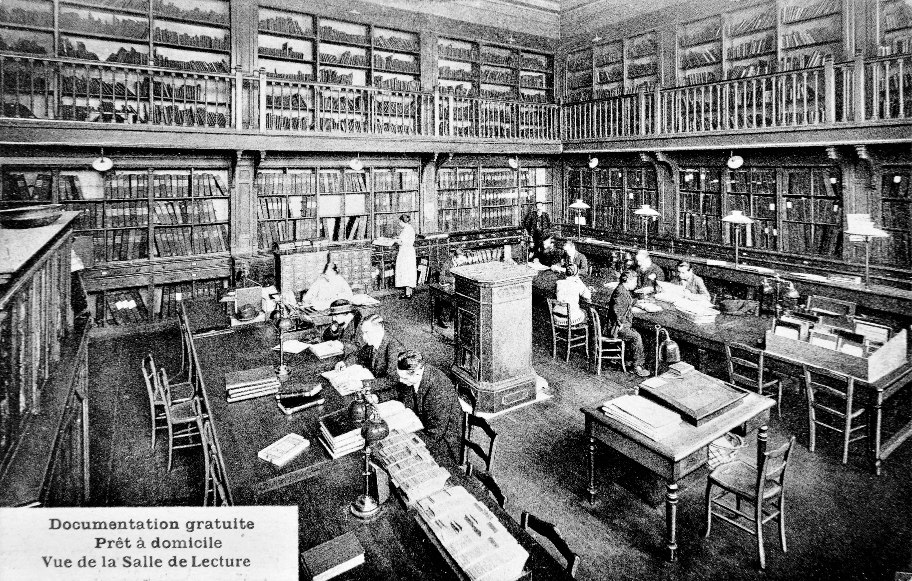
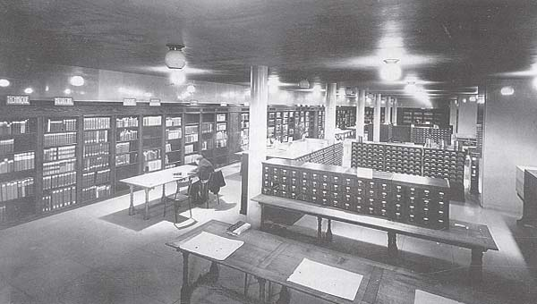
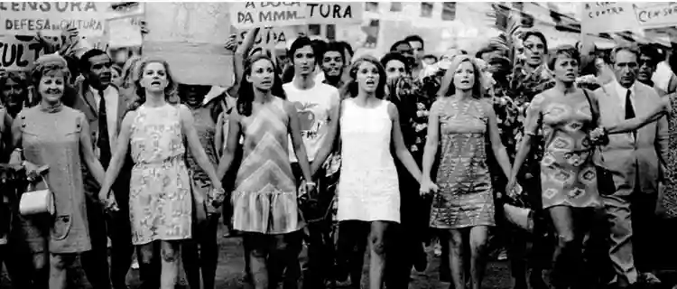

Suzanne Briet, Visionnaire de l'Information
Scroll
Résumé
Suzanne Briet (1894-1989) est une figure pionnière dans le domaine des sciences de l'information et de la documentation. Bibliothécaire française, elle a joué un rôle essentiel dans la transformation de la bibliothéconomie traditionnelle en une discipline moderne de gestion de l'information. Elle a également été une militante féministe et une figure engagée dans le développement des bibliothèques publiques. Sa pensée a influencé des théoriciens modernes de la documentation, notamment dans le cadre des études sur les archives et la gestion de l'information.

Source : Détail de la carte d'idéntité de Suzanne Briet, 1952-1953. Bibliothèque nationale de France, archives institutionnelles

Enfance
L’enfance et la jeunesse de Suzanne Briet ont profondément influencé son parcours professionnel et intellectuel, forgeant son caractère et ses valeurs. Née en 1894 dans une famille bourgeoise parisienne, elle grandit dans un environnement privilégié qui lui offre des opportunités précieuses d’accès à l’éducation et à la culture. Très tôt, Suzanne Briet bénéficie des privilèges d'un milieu intellectuellement stimulant, où la culture et l'apprentissage sont au centre de la vie quotidienne. À l’âge de huit ans, la famille Briet déménage à Meaux, une petite ville située à une heure de Paris. C'est là que Suzanne passe une partie de son enfance, et c'est également dans cette période qu'elle commence à forger sa passion pour la lecture et les lettres. Elle fréquente des établissements scolaires prestigieux, où elle se distingue par son sérieux et sa curiosité intellectuelle. Dès son plus jeune âge, elle se révèle être une élève assidue, attirée par la littérature classique, l’histoire et la philosophie. Ces disciplines nourrissent son esprit analytique et éveillent son désir de comprendre le monde, des éléments qui guideront toute sa carrière et ses recherches futures.

Source : Le boulevard des Italiens © cpabastille91
Son parcours scolaire se distingue par l’acquisition d’une formation solide et complète dans les lettres, qui constitue le socle de sa pensée. Elle se plonge dans les textes littéraires, les grands auteurs et les œuvres philosophiques, affinant sa réflexion et son approche critique. Suzanne Briet ne se contente pas d’une éducation purement académique ; elle développe aussi un goût prononcé pour la culture et les savoirs plus larges. L’ouverture d’esprit qu’elle cultive dans sa jeunesse se traduira par une volonté constante de dépasser les limites des disciplines traditionnelles et d’explorer de nouveaux horizons intellectuels. Cette soif de connaissance se concrétise plus tard dans son engagement pour la documentation et la gestion de l’information, des domaines en pleine évolution à l’époque.

Source : Ville de Meaux en 1900 - Archives départementales de Seine-et-Marne
Mais la jeunesse de Suzanne Briet n’est pas seulement marquée par l'éducation. Elle vit également dans un contexte sociopolitique tumultueux, où la Première Guerre mondiale, qui éclate alors qu’elle a à peine 20 ans, bouleverse profondément la société et le monde tel qu’elle le connaît. La guerre, avec son cortège de destructions et de répercussions sociales, affecte la vision qu’elle se fait de la société et du rôle de l’information dans la gestion de la vérité et de la connaissance. Cette période de crises et de bouleversements va notamment renforcer son engagement en faveur d’une diffusion plus efficiente et rigoureuse de l’information. Suzanne Briet se rend vite compte de l'importance capitale des documents, des archives et des bibliothèques pour préserver, organiser et transmettre le savoir, surtout dans un monde marqué par l’incertitude et les faux-semblants.

Source : Ville de Paris – bibliothèque Forney, Yves Lesven
Début de Carrière
En 1924, après ses études, Suzanne Briet rejoint la Bibliothèque Nationale de France (BNF), où elle commence sa carrière en tant que bibliothécaire. Elle est affectée au département des périodiques, une section en pleine expansion en raison de l'augmentation rapide de la production imprimée. Là, elle se confronte aux défis concrets de la gestion et de la classification des documents dans une époque marquée par une explosion des contenus écrits, allant des journaux aux revues spécialisées. Ces premières années lui permettent d’acquérir une connaissance approfondie des techniques bibliothéconomiques, tout en lui révélant leurs limites face à l’évolution rapide des supports et des usages de l’information. Au fil du temps, elle s’imprègne des problématiques liées à l’organisation du savoir et développe très tôt un intérêt pour la modernisation des pratiques traditionnelles. Visionnaire, elle perçoit la nécessité d’adopter une approche plus dynamique et inclusive de la documentation, intégrant des supports émergents et des méthodologies plus efficaces. C'est dans ce cadre qu'elle va progressivement élaborer sa réflexion sur le rôle du document et la documentation en tant que discipline à part entière, en dépassant les frontières strictement bibliographiques.

Source : Suzanne Briet lors de son travail, UCLA School of Education & Information Studies
Rapidement, Suzanne Briet se montre passionnée par la question de l’organisation des documents, en particulier les nouvelles formes de médias, comme la photographie ou le cinéma, qu’elle estime aussi dignes d’être conservées et cataloguées que les livres. Elle milite activement pour que ces formes d'expression soient reconnues comme des documents à part entière, enrichissant ainsi les outils de gestion de l’information. Convaincue que la documentation devait s’adapter aux évolutions de la société et aux besoins des utilisateurs, elle commence à formuler des idées novatrices qui redéfiniront la discipline. En 1934, elle participe à la fondation de l’Association des Bibliothécaires Français (ABF), une organisation professionnelle dédiée à la modernisation des bibliothèques et de la documentation en France. Dans ce cadre, elle joue un rôle clé en encourageant une approche plus globale et innovante de la gestion de l’information, basée sur une vision humaniste et tournée vers l’avenir. Ses propositions audacieuses influenceront durablement la profession, anticipant des enjeux encore pertinents dans les sciences de l'information aujourd’hui.

Source : Le Répertoire Bibliographique Universel vers 1900, Mundaneum
Pionnière dans la Communication Moderne
Suzanne Briet devient l’une des principales promotrices de l'idée que la documentation ne se limite pas aux livres ou aux écrits imprimés, mais englobe tout type de source d’information. Elle s’appuie notamment sur les travaux du célèbre bibliographe belge Paul Otlet, qui a développé le concept de "documentation" comme une science en soi, visant à organiser le savoir universel. Briet enrichit cette pensée en y ajoutant une perspective pratique, visant à rendre la documentation accessible et fonctionnelle pour les utilisateurs dans un monde en pleine transformation technologique. En 1951, Suzanne Briet publie un essai fondateur intitulé Qu'est-ce que la documentation ?, où elle définit le concept de "document" de manière très large. Pour elle, un document peut être un livre, un article de presse, mais aussi une photographie, un tableau, voire une étoile observée par un astronome. Son exemple célèbre pour illustrer cette idée est celui d'une antilope vue dans un zoo : lorsqu'elle est observée et que des informations à son sujet sont enregistrées, cette antilope devient, selon Briet, un document. Cette approche novatrice élargit la compréhension de ce qui peut être considéré comme une source de savoir, incluant des objets ou des phénomènes dès lors qu’ils sont contextualisés par un processus documentaire.

Source : Photo Bibliothèque Classée Selon Suzanne Briet, UCLA School of Education & Information Studies

Source : Combats féministe de Suzanne Briet, Ciência da Informação Express - UFLA
Cette vision élargie du document est révolutionnaire à l'époque et pose les bases de la documentation moderne, où toute forme de donnée peut être prise en compte pour structurer le savoir. Briet ne se contente pas de poser des principes théoriques ; elle milite activement pour que la documentation devienne un véritable pont entre les disciplines, répondant aux besoins spécifiques des chercheurs, des enseignants et du grand public. Elle affirme également que la documentation doit inclure une dimension sociale et doit viser à répondre aux besoins des utilisateurs, anticipant ainsi des concepts qui seront développés plus tard dans les sciences de l'information, comme l'ergonomie documentaire ou les interfaces utilisateur. Par son approche, elle contribue à faire de la documentation un outil essentiel pour naviguer dans l’explosion de l’information caractéristique du XXe siècle.
L'Héritage de Suzanne Briet
Suzanne Briet a poursuivi sa réflexion novatrice sur la documentation tout au long de sa carrière, enrichissant ce domaine même après avoir quitté son poste à la Bibliothèque nationale de France en 1960. Cette période de retraite active lui a permis de se consacrer pleinement à la diffusion de ses idées, à l’écriture d’essais, et à des conférences destinées à inciter les nouvelles générations à repenser en profondeur la gestion de l’information et l’organisation du savoir. Visionnaire, elle a élargi la notion traditionnelle de "document" pour y inclure des objets, des événements, et d’autres formes de représentation, ce qui a marqué un tournant majeur dans les sciences de l’information modernes.


Source : Photo de 'Qu'est-ce que la Communication ?'
Source : Photo de 'Château des Ardennes'
Source : Photo de 'Rimbaud Notre Prochain'
Malgré une reconnaissance limitée de son vivant, son influence s’est accrue après sa disparition en 1989, ses travaux inspirant un large éventail de professionnels et de chercheurs. En effet, son approche avant-gardiste a posé les bases des méthodologies utilisées aujourd’hui pour organiser, analyser et diffuser les données dans un monde de plus en plus connecté. Suzanne Briet avait pressenti les défis posés par l’ère numérique et imaginé des solutions avant-gardistes pour structurer cet immense flux d’informations.
Son héritage se retrouve dans les pratiques actuelles de la documentation, de l’archivistique et des sciences de l’information. Elle a contribué à définir des outils et des cadres théoriques indispensables pour comprendre l’univers complexe des données. Aujourd’hui encore, ses théories continuent d’éclairer les professionnels face aux défis de la gestion de l’information dans un monde où celle-ci occupe une place centrale.